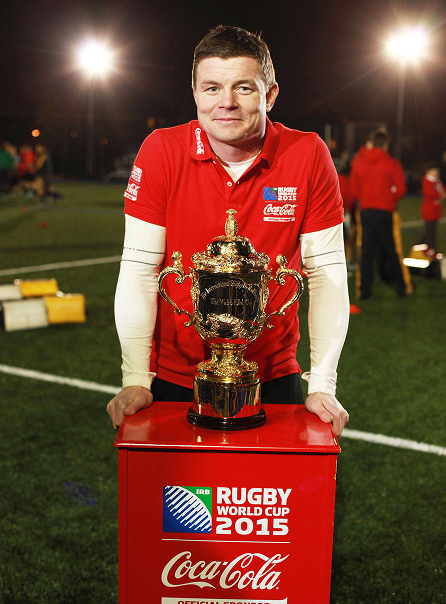

Coca-Cola e il rugby globale
La partnership tra Coca-Cola e il mondo del rugby rappresenta uno degli esempi più significativi di come uno sponsor globale possa integrarsi in modo profondo all’interno dell’identità di uno sport. Nel corso degli anni, la presenza del brand nelle principali competizioni internazionali, come la Rugby World Cup non si è limitata alla visibilità pubblicitaria, ma ha contribuito a costruire un ecosistema di esperienze che rafforza il legame tra pubblico, atleti e comunità sportive. In uno sport fondato su valori come rispetto, disciplina e spirito di squadra, Coca-Cola ha trovato un contesto naturale per consolidare la propria immagine legata alla condivisione e alla socialità.
Il legame tra il brand e il rugby si basa su una forte coerenza valoriale. Il rugby promuove infatti principi di lealtà, collaborazione e rispetto dell’avversario, che si riflettono anche nel modo in cui le competizioni vengono vissute, soprattutto attraverso tradizioni come il “terzo tempo”. Coca-Cola ha saputo inserirsi in questa cultura sportiva non come elemento esterno, ma come parte integrante dell’esperienza complessiva dell’evento, contribuendo a rafforzare il senso di comunità che caratterizza il mondo del rugby a livello globale.
